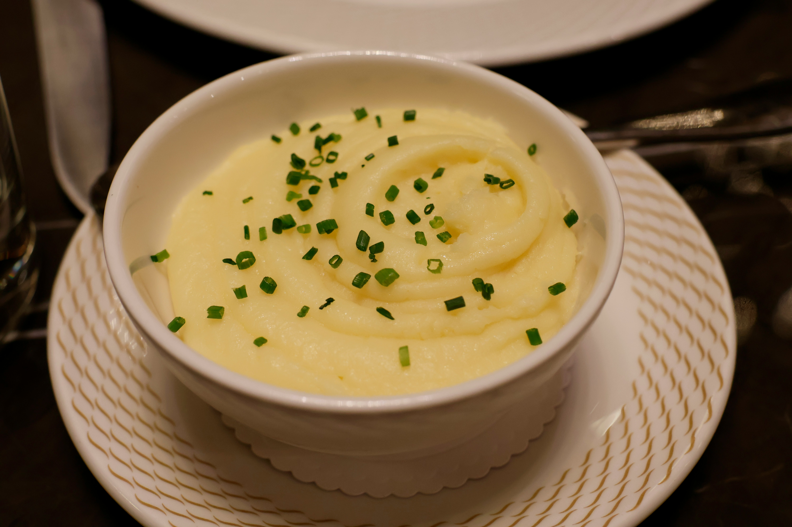

Back to all Recipes
Basic mashed potato

This mashed potato recipe is perfect if you're looking for good, old-fashioned mashed potatoes.
Made with just potatoes, milk, butter, and optional garlic, this go-to recipe makes a classic holiday dish.
Learn how to make mashed potatoes that come out smooth, creamy, and delicious every time! Serve with gravy or extra butter on top.
Ingredients
- 2 pounds russet potatoes, peeled and cut into 1-inch pieces
- 1/2 cup milk
- 1/4 cup unsalted butter
- Salt and pepper to taste
- Optional: 2 cloves garlic, minced
Instructions
- Place the potatoes in a large pot and cover with cold water. Add a pinch of salt.
- Bring to a boil over medium-high heat. Reduce heat to medium-low and simmer until potatoes are tender, about 15-20 minutes.
- Drain the potatoes and return them to the pot.
- Add the milk, butter, and garlic (if using) to the pot. Mash the potatoes with a potato masher or fork until smooth and creamy.
- Season with salt and pepper to taste. Serve warm.